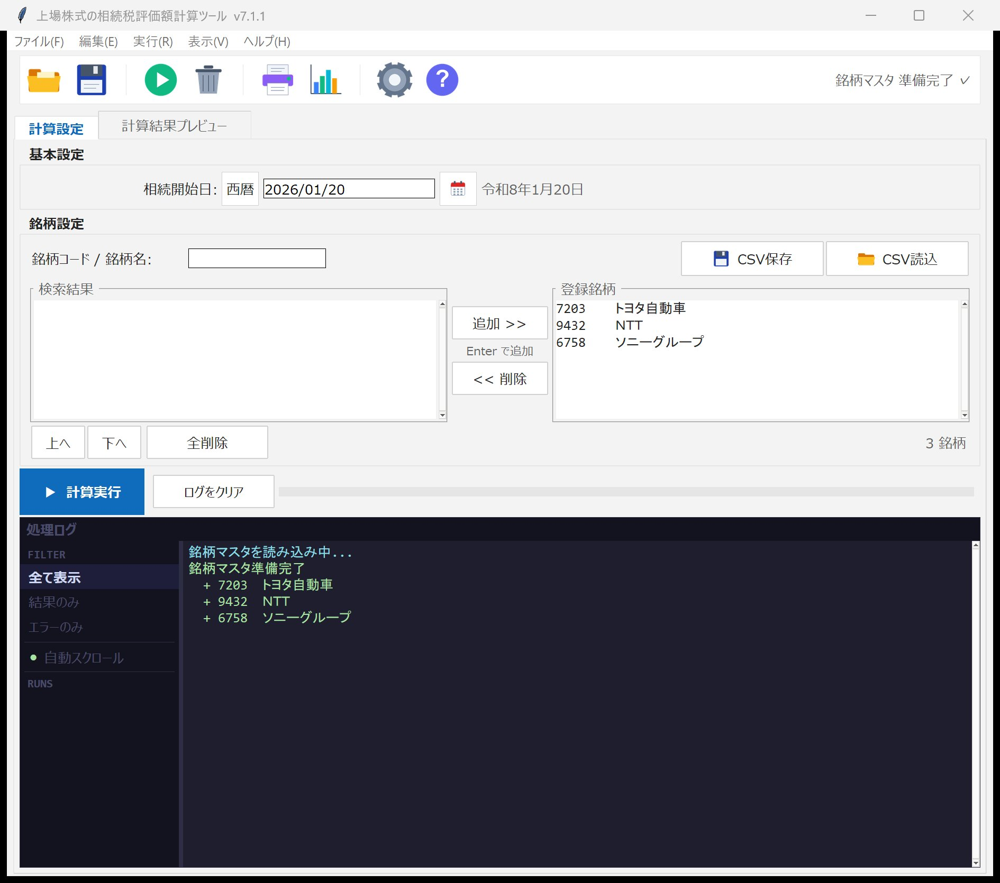
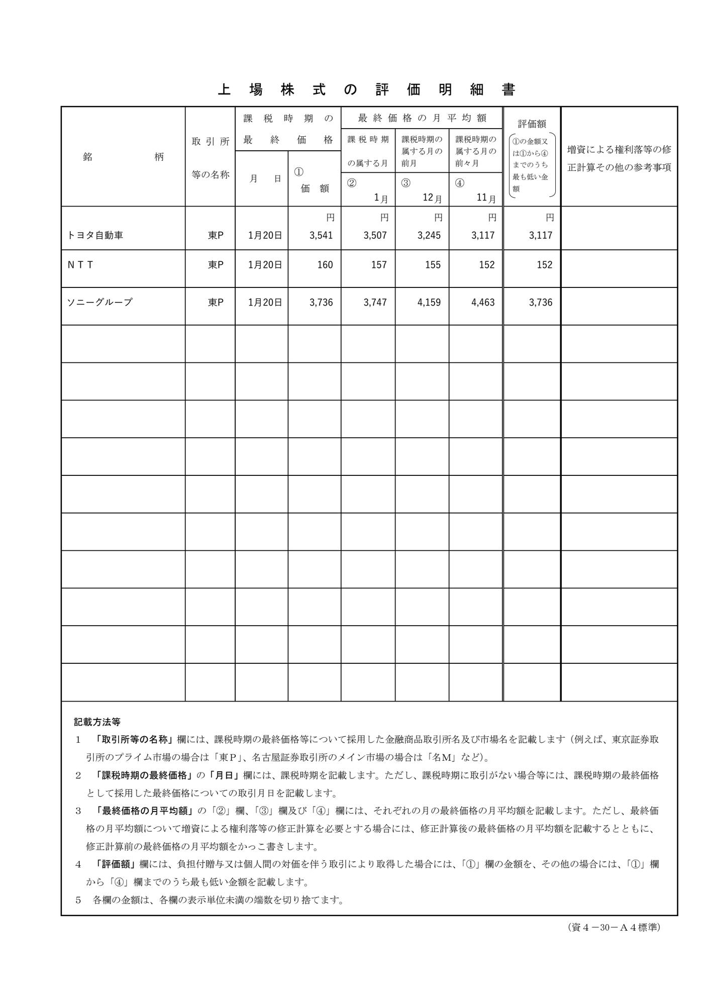
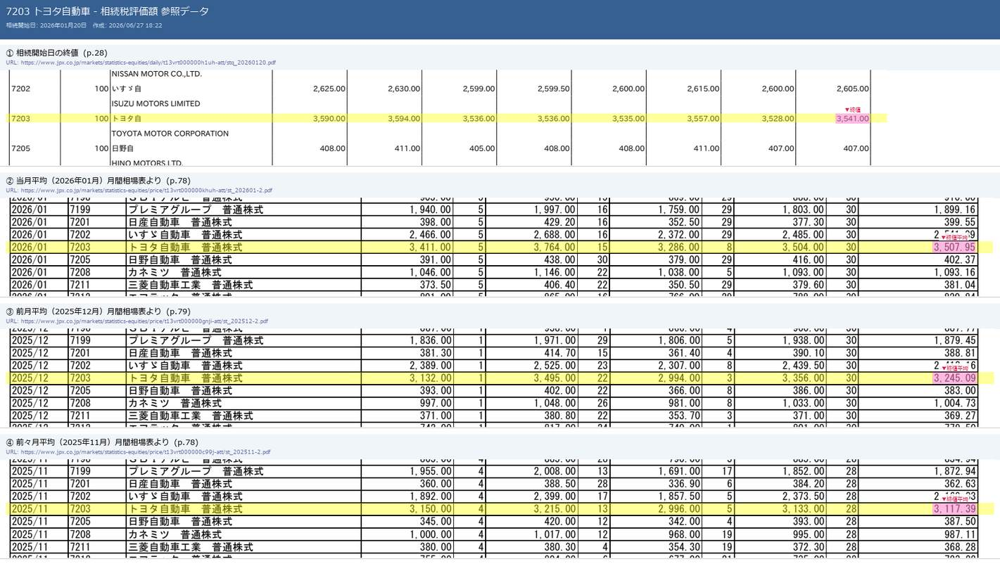

財産評価基本通達169に準拠し、相続開始日の終値と当月・前月・前々月の月間平均——4つの価額から最小値を自動採用。採用根拠をマーキングした証跡画像まで残せる、相続税評価の補助計算ツールです。
体験版は無料。ご購入いただくとライセンスキーで全機能が解除されます。
上場株式の相続税評価では、相続開始日の終値に加えて、その月・前月・前々月の月間平均終値を銘柄ごとに集め、4つの価額を比べて最も低い額を採用します。資料を一銘柄ずつ探して数字を拾い、評価明細書へ書き写す——銘柄が増えるほど時間がかかり、転記ミスのリスクも高まります。
本ツールなら、証券コードと相続開始日を入力するだけ。4つの価額の集計・最小値の採用・評価明細書PDFへの記入までを自動化し、数時間かかっていた集計・転記を分単位に短縮します。
※ 短縮効果は標準的なケースの目安です。銘柄数・回線環境により変動します。
相続開始日を入れ、証券コードまたは銘柄名で検索して登録。複数銘柄をまとめて登録できます。英字を含む銘柄コード・上場廃止銘柄・ETF／REITにも対応します。

「計算実行」を押すと、終値・当月／前月／前々月の月間平均の4価額を集計し、最小値（評価額）を自動採用。結果を一覧でプレビューできます。
国税庁様式（資4-30）に沿った「上場株式の評価明細書」PDFを自動作成。Excel（個別＋サマリー）も出力できます。申告書類の下書き・補助資料としてご活用ください。


図はトヨタ自動車（7203）の参照データ画面の例です。
評価額の根拠となった終値・月平均は、参照した公開資料の該当行をマーキングした画像（証跡）として保存できます。採用の経緯が一目で分かるため、確認や説明のしやすさが高まります。
正確性・説明可能性・時短を、実務の流れに沿って支援します。
株価等の情報は、お使いのパソコン上で公開されている資料から取得して計算します（当社のサーバーに株価データを蓄積・再配信することはありません。取得は必要最小限の範囲・間隔で行う設計です）。
ご購入前に、無料の体験版で動作・適合をご確認いただけます。
本ソフトは、相続税評価額の算定および申告書類作成を補助する計算ツールであり、税務上の助言を行うものではありません。評価額・申告内容の最終的な確認と判断、申告の責任は利用者（税理士等）に帰属します。
出力（評価明細書PDF・Excel・証跡画像）は下書き・補助資料です。提出前に必ず原典（公開資料）と照合してください。公開資料の様式変更・記載揺れ等により、取得値や判定が誤る可能性があります。正確性・完全性・継続的な動作は保証しません。
株価等の情報は、利用者のパソコン上で公開資料から取得します。当社はデータを保持・再配信しません。本ソフトの使用または使用不能により生じた損害について、当社は法令で許容される範囲で責任を負いません。
評価明細書PDFは、国税庁が公開する「上場株式の評価明細書」様式（資4-30）に基づき、本ソフトが各欄へ記入した下書きです（出典：国税庁）。様式そのものは国税庁の著作物であり、本ソフトが作成・編集したものではありません。
| 販売事業者（屋号） | Nanax Soft |
|---|---|
| お問い合わせ窓口 | nanax.soft@gmail.com |
| 販売価格 | ¥9,800（税込）。Vector シェアレジ経由でのご購入の場合、価格には消費税および Vector 所定の手数料が含まれます。最新の金額は各商品ページの表示をご確認ください。 |
| 商品代金以外の必要料金 | インターネット接続料金・通信料等はお客様のご負担となります。Vector シェアレジ経由でご購入の場合、シェアレジ所定の手数料が購入代金に含まれます。 |
| お支払い方法 | 販売チャネル（Vector シェアレジ等）が定める方法によります。 |
| お支払い時期 | 各販売チャネルの定めによります。 |
| 商品の引渡時期 | ダウンロード商品です。お支払い確認後、ダウンロード／ライセンスキーのご案内をもって提供します。 |
| 返品・キャンセル | デジタル商品の性質上、ご購入後の返品・返金はお受けできません。ご購入前に、動作環境・ご利用上の注意・免責事項を必ずご確認ください。無料の体験版で、動作・ご利用環境との適合を必ずご確認のうえご購入ください。 |
| 動作環境 | Windows（64bit）。詳細は上記の動作環境欄をご確認ください。 |
事業者の氏名・住所・電話番号は、ご請求をいただいた場合、上記のお問い合わせ窓口より遅滞なく（電子メールにて）開示します。
配布・決済はVector（ソフトライブラリ＝本体／シェアレジ＝ライセンスキー）が行います。ご購入いただくと、ライセンスキーで全機能をご利用いただけます。
ご不明な点は nanax.soft@gmail.com まで。